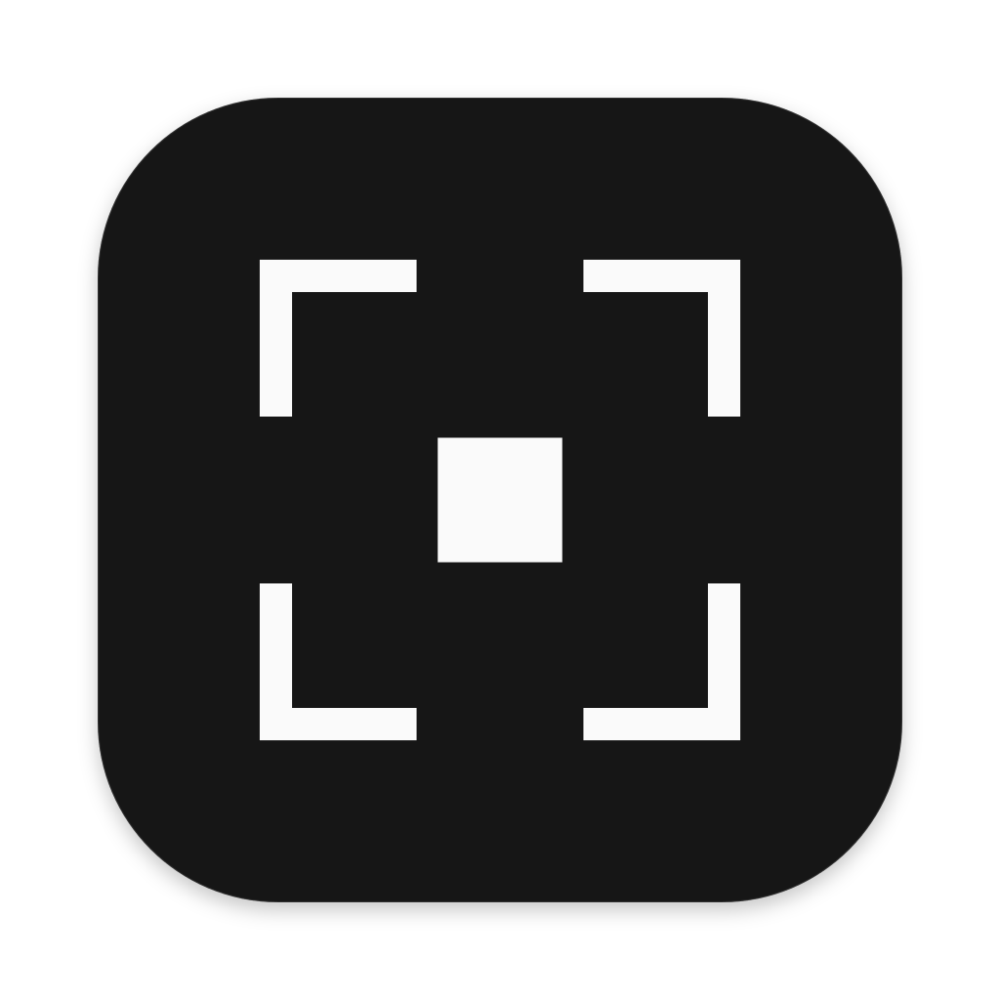

Skip to content

MOVIE-ADE
Features
Download
Docs
Changelog
GitHub
Download
MOVIE-ADE docs
Start with the
Quick start
.
Quick start
Install
Concepts
Keyboard shortcuts
Projects and URLs
Recording
Sending to agents
Editor and preview
Transcription and costs
Accounts and usage
Settings reference
Data and privacy
Files and environment
Troubleshooting